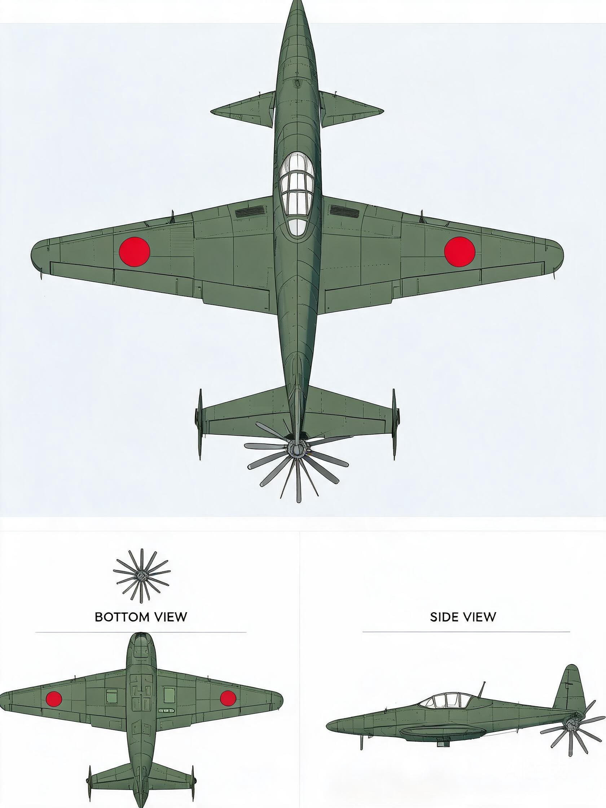
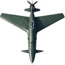
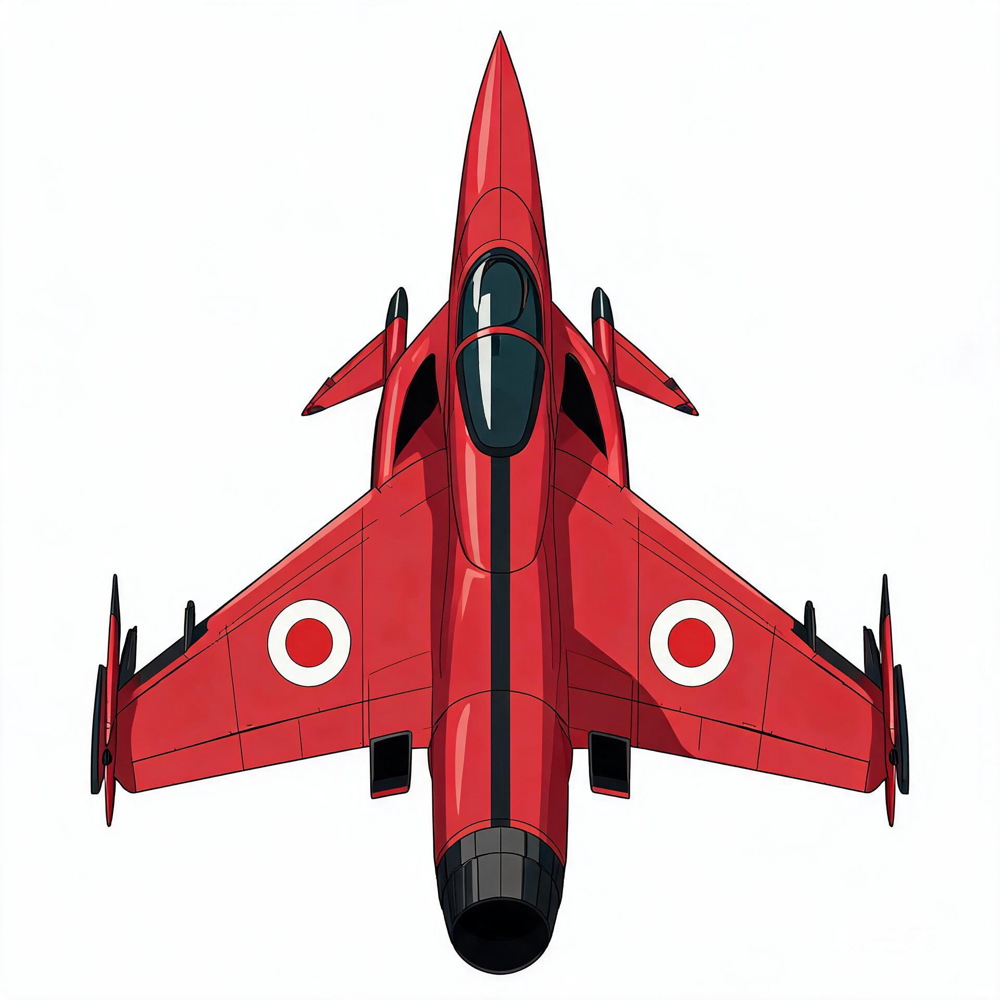
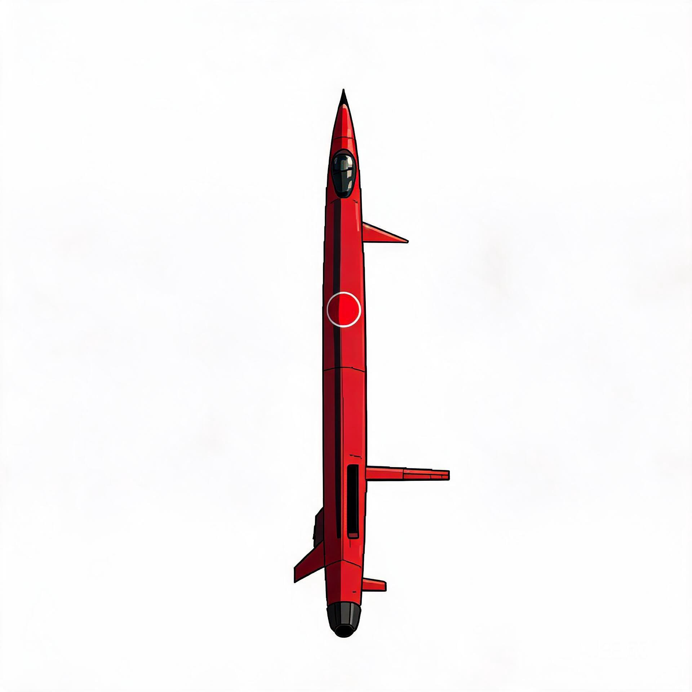
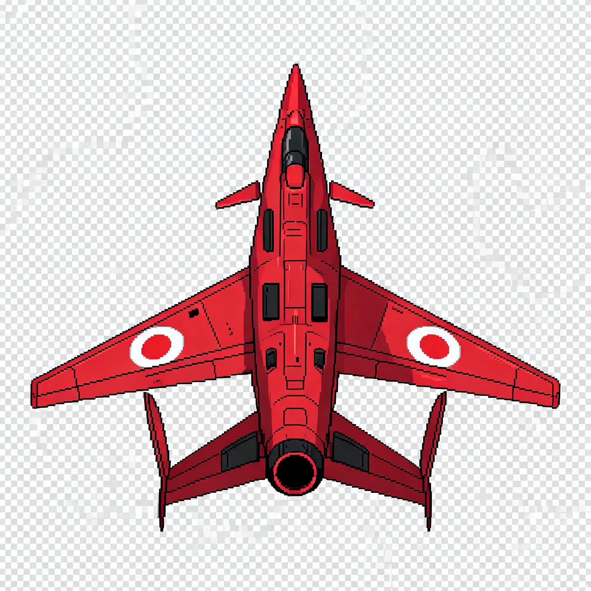
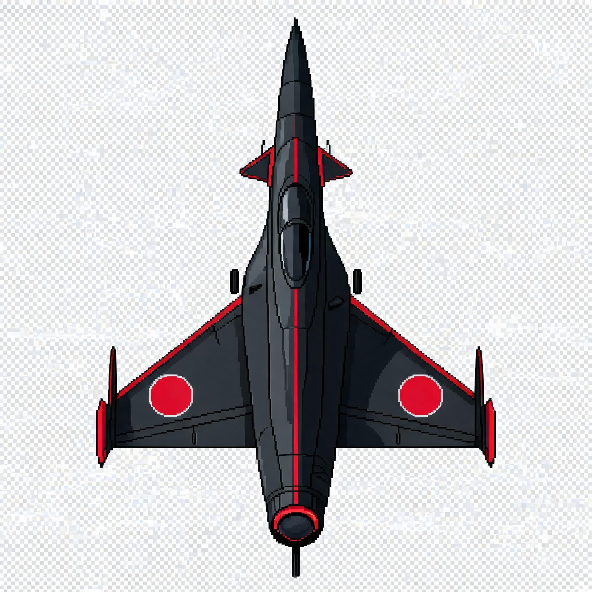
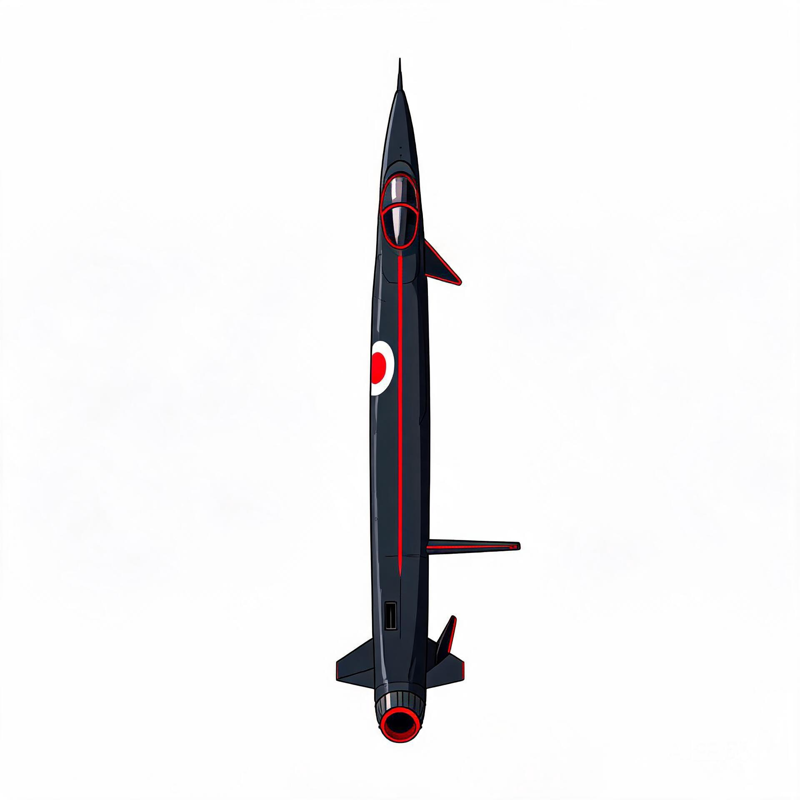
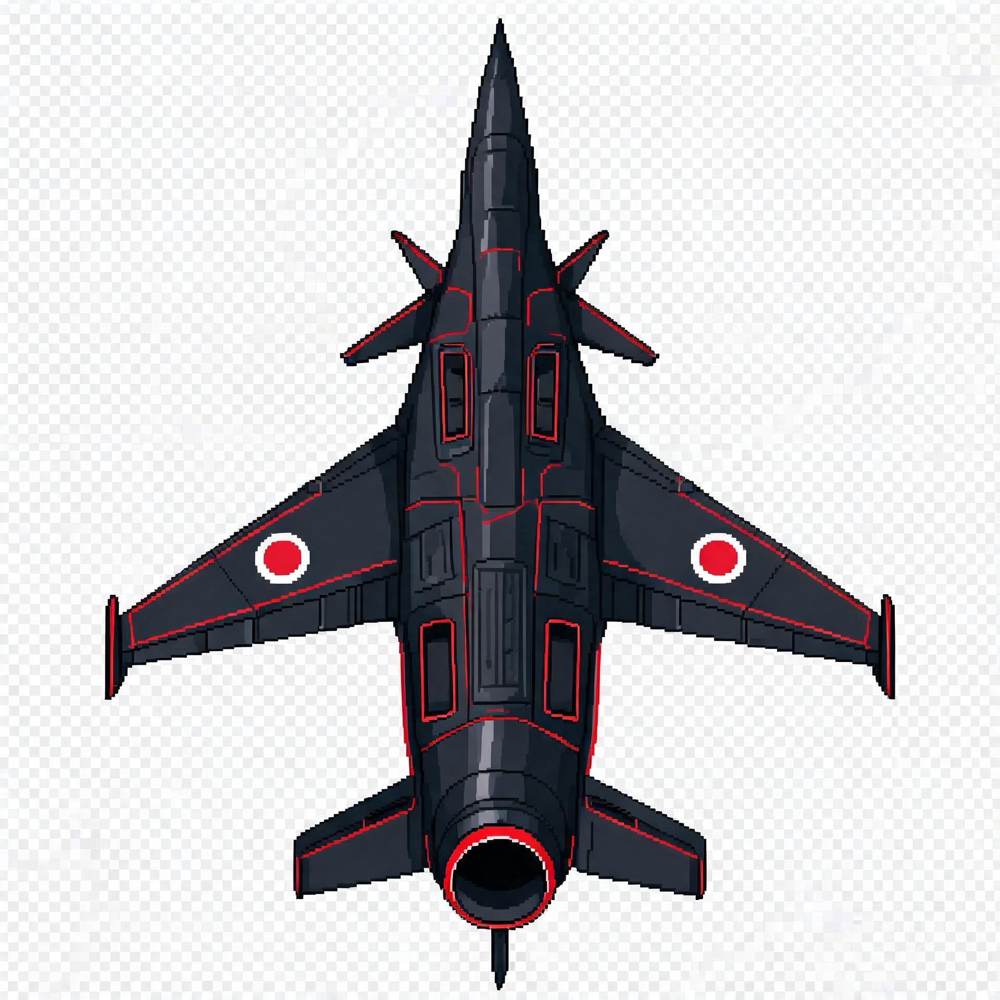
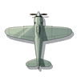

日军敌机21种（三视图/滚筒翻滚+倾斜转弯） + 美军玩家机6种（正视/倾斜转弯） · 9px/m 统一比例尺 · 四种飞行姿态全覆盖
《飞虎队1945》（Flying Tigers 1945）是一款基于 Godot 4.7 引擎开发的纵向卷轴射击游戏（STG），以二战中国战场和太平洋战场为历史背景。玩家驾驶 P-40 战鹰战斗机，从昆明出发，历经中国战场各战役、驼峰航线、太平洋海战，最终轰炸日本本土。
本文档针对全部飞机精灵图的外包制作，分两大板块：
所有机型共用统一比例尺 9 px/m，确保敌我机型大小对比真实一致。最小机型 J8M 秋水（翼展 86px）与最大敌机 G8N 连山（翼展 288px）的视觉宽度比为 1:3.35，真实比例高度一致。完整比例尺数据详见 aircraft-sprite-sizing-spec.html。
| 编号 | 机型 | 级别 | 涂装 | 视图 | 数量 | 尺寸 | 用途 |
|---|---|---|---|---|---|---|---|
| D-01 | J7W1 震电 | 杂兵 | 深橄榄绿 | 俯视 / 侧视 / 仰视 | 3 | 128×128 | H2 滚筒翻滚杂兵 |
| D-02 | J7W2 震电改·赤 | Boss | 红色+黑色条纹 | 俯视 / 侧视 / 仰视 | 3 | 256×256 | H2 双Boss（障碍投放型） |
| D-03 | J7W2 震电改·玄 | Boss | 纯黑+红色细节 | 俯视 / 侧视 / 仰视 | 3 | 256×256 | H2 双Boss（三岔火线型） |
| D-04 | J8M 秋水 | 杂兵 | 深橄榄绿 | 俯视 / 侧视 / 仰视 | 3 | 128×128 | H2 火箭翻滚冲刺 |
| D-05 | A6M 零式 | 杂兵 | 灰白色（海军涂装） | 正视 / 左倾 / 右倾 | 3 | 128×128 | H1 驼峰航线拦截 + 抛物线转弯 |
| D-06~D-11 | Ki-27/Ki-43/Ki-44/Ki-61/Ki-100/J2M 等 | 杂兵 | 深橄榄绿/灰白 | 正视（+倾斜转弯） | 1~3 | 128×128 | 各关战斗机（Ki-27/Ki-43 需倾斜图做抛物线转弯） |
| D-12~D-15 | D3A/Ki-45/Ki-102/Ki-48 | 杂兵 | 深橄榄绿 | 正视 / 左倾 / 右倾 | 3 | 192×192 | 俯冲轰炸机/重型战斗机/轻爆（T3层级） |
| D-16~D-20 | Ki-49/Ki-21/Ki-67/G3M/G4M | 杂兵 | 深橄榄绿 | 正视 / 左倾 / 右倾 | 3 | 256×256 | 中型/重型轰炸机（T4层级） |
| D-21 | G8N 连山 | 杂兵 | 深橄榄绿 | 正视 / 左倾 / 右倾 | 3 | 384×384 | 超重型轰炸机（T5层级，最大敌机） |
| 敌机小计 | 57 张精灵图（滚筒翻滚三视图12张 + 倾斜转弯/正视45张） | ||||||
| 编号 | 机型 | 角色 | 涂装 | 视图 | 数量 | 尺寸 | 用途 |
|---|---|---|---|---|---|---|---|
| P-06 | P-40 战鹰 | 默认 | 飞虎队涂装（鲨鱼嘴） | 正视 / 左倾 / 右倾 | 3 | 128×128 | 全关卡默认玩家机 |
| P-07 | P-51 野马 | 解锁 | 银色机身+条纹 | 正视 / 左倾 / 右倾 | 3 | 128×128 | 解锁玩家机 |
| P-08 | P-47 雷电 | 解锁 | 橄榄绿+白条纹 | 正视 / 左倾 / 右倾 | 3 | 128×128 | 解锁玩家机 |
| P-09 | P-38 闪电 | 解锁 | 银色+双尾桁 | 正视 / 左倾 / 右倾 | 3 | 192×192 | 解锁玩家机（双尾桁） |
| P-10 | B-25 米切尔 | 轰炸 | 橄榄绿+星标 | 正视 / 左倾 / 右倾 | 3 | 256×256 | 杜立特空袭等轰炸关 |
| P-11 | B-29 超级堡垒 | 轰炸 | 银色机身+星标 | 正视 / 左倾 / 右倾 | 3 | 512×512 | 最终关轰炸日本本土 |
| 玩家机小计 | 18 张精灵图 | ||||||
| 总计 | 75 张精灵图（敌机 57 + 玩家机 18） | ||||||
aircraft-sprite-sizing-spec.html。
| 级别 | 画布尺寸 | 飞机实际绘制尺寸 | 说明 |
|---|---|---|---|
| 杂兵级（战斗机） | 128×128 px | 54~112 px（按 9px/m 比例尺） | 敌机战斗机 + 玩家机 P-40/P-51/P-47。飞机居中绘制，四周留白用于特效叠加 |
| 杂兵级（轰炸机） | 192×192 / 256×256 px | 92~225 px（按 9px/m 比例尺） | 敌机轰炸机 + 玩家机 P-38(192) / B-25(256)。大型飞机画布更大，自然形成视觉层次 |
| Boss级 | 256×256 px | 176×202 px（按 18px/m 比例尺，2× 放大） | Boss 使用 2 倍比例尺，体积更大 |
| 超重型战略轰炸机 | 512×512 px | 272×388 px（按 9px/m 比例尺） | 仅玩家机 B-29 超级堡垒使用此画布（T6 层级） |
游戏中所有飞行单位共有四种飞行姿态，各自对应不同的精灵图需求。外包团队需根据下表确认每种机型的素材数量和类型。详细技术原理参见 aircraft-bank-turn-spec.html。
| 姿态 | 名称 | 描述 | 素材需求 | 适用机型 |
|---|---|---|---|---|
| 1 | 直线飞行 Straight |
精灵图上下移动，机头朝上，无倾斜无翻滚 | 1 张标准俯视图 | 所有飞机（玩家+敌机） |
| 2 | 倾斜转弯 Banking |
飞机左右平移时机身倾斜~45°，一侧机翼抬升一侧下沉，机头保持朝上 | 3 张：正视 + 左倾 + 右倾 | 玩家机全部 + 敌方轰炸机/大型机 |
| 3 | 抛物线转弯 Parabolic |
小型战斗机从屏幕两侧横向飞入，弧线下转后俯冲。复用姿态2的倾斜图+路径旋转 | 复用姿态2素材（无额外需求） | 敌机小型战斗机 Ki-27, Ki-43, A6M |
| 4 | 滚筒翻滚 Barrel Roll |
飞机绕机身长轴360°自旋，依次显示机背→侧面→机腹 | 3 张：俯视 + 侧视 + 仰视 | 仅试验型截击机 J7W 震电, J8M 秋水 |
不同重要性的飞机应投入不同的细节密度。外包团队按以下分级控制绘制精度，避免在小机型上过度堆砌细节导致噪点，也避免在 Boss 级机型上细节不足。
| 级别 | 适用机型 | 细节要求 | 绘制重点 |
|---|---|---|---|
| S 级 | Boss：J7W2 震电改（赤/玄）、B-29 超级堡垒 | 最高细节 | 全结构细节：面板线、铆钉、舵面、翼根、发动机罩、散热器、排气管、座舱框、炮口、起落架舱门、风化痕迹。涂装层次丰富，明暗过渡精细 |
| A 级 | 大型敌人：Ki-21、G4M、G3M、Ki-67、Ki-49、G8N 连山 | 较高结构细节 | 保持较高结构细节，重点表现发动机、翼面、机腹武器舱等识别特征。可省略部分微小铆钉 |
| B 级 | 普通飞机：A6M、Ki-27、Ki-43、Ki-44、Ki-61、Ki-84、Ki-100、J2M、J7W、J8M、D3A、Ki-45、Ki-102、Ki-48、Ki-51、玩家机 P-40/P-51/P-47/P-38/B-25 | 历史识别特征+轮廓 | 重点是历史识别特征和清晰轮廓。面板线和主要结构线保留，微小铆钉可省略。确保在 128×128 画布中缩放后仍可识别机型 |
| C 级 | 远距离杂兵（如有） | 轮廓+大色块 | 重点是轮廓、涂装大色块和基本武器方向。最小可读性优先 |
每个主要素材应经过实际游戏尺寸的可读性测试。由于精灵图在游戏中会按 9px/m 比例尺绘制，且画布层级不同（T2~T6），最终在屏幕上的显示尺寸差异很大。外包团队交付后，PM/Design 将按以下标准验收：
| 缩放比例 | 可读性要求 | 测试方法 |
|---|---|---|
| 100% | 应能识别具体单位型号（如区分 Ki-27 与 Ki-43） | 在 Godot 编辑器中按原始画布尺寸查看 |
| 50% | 应能识别单位类别（如区分战斗机与轰炸机） | 在 Godot 中将 Sprite2D scale 设为 0.5 查看 |
| 25% | 至少保持清晰的玩家/敌人轮廓（如区分友军与敌军） | 在 Godot 中将 Sprite2D scale 设为 0.25 查看 |
最终验收以游戏实际显示效果为准，而非像素级检查。如果 100% 下细节丰富但 25% 下轮廓模糊，说明细节噪点过多、轮廓不够清晰，需要调整。
部分敌机（J7W 震电、J8M 秋水）在游戏中会执行滚筒翻滚动作——飞机绕机身长轴旋转 360°，机翼左右翻滚，依次显示机背（俯视）→ 机身侧面（侧视）→ 机腹（仰视）→ 回到机背。这个动画需要三张图配合实现。
翻滚角度从 0° 到 360°，通过 cos(θ) 计算机翼可见宽度，并在特定角度区间切换显示的图片：
| 翻滚角度 | cos(θ) | 显示的图 | scale.x | 视觉状态 |
|---|---|---|---|---|
| 0° | +1.0 | 俯视图 | 1.0 | 机背完全朝上，翼展最宽 |
| 45° | +0.71 | 俯视图 | 0.71 | 机背倾斜，翼展缩窄 |
| ~90° | ≈0 | 侧视图 | 1.0 | 机翼朝向镜头，仅见机身侧面 |
| 135° | -0.71 | 仰视图 | 0.71 | 机腹倾斜，翼展缩窄 |
| 180° | -1.0 | 仰视图 | 1.0 | 机腹完全朝上，翼展最宽 |
| 225° | -0.71 | 仰视图 | 0.71 | 机腹倾斜，翼展缩窄 |
| ~270° | ≈0 | 侧视图 | 1.0 | 机翼朝向镜头（另一侧） |
| 315° | +0.71 | 俯视图 | 0.71 | 机背倾斜，翼展缩窄 |
| 360° | +1.0 | 俯视图 | 1.0 | 回到起点 |
| 视图 | 显示时机 | 内容 | 绘制要点 |
|---|---|---|---|
| 俯视图 | 0°~81°, 279°~360°（约70%时间） | 机背朝上，完整翼展+机身 | 十字形布局，机翼水平展开，日之丸在翼面，座舱透明可见 |
| 侧视图 | 81°~99°, 261°~279°（约5%时间） | 机翼朝镜头，仅见机身侧面轮廓 | 窄长条形，宽度约为俯视图的 1/6~1/8。机翼缩为一条横线 |
| 仰视图 | 99°~261°（约25%时间） | 机腹朝上，完整翼展+机身 | 与俯视图镜像，但显示机腹细节：起落架舱门、散热口、排气管 |
九州 J7W1 震电（Shinden）是二战末期日本研制的鸭式布局推进螺旋桨截击机，用于拦截 B-29 轰炸机。仅制造 2 架原型机，未服役。其独特的鸭式布局在二战中极为罕见。
| 特征 | 说明 | 俯视图中的表现 |
|---|---|---|
| 鸭式前翼 | 小型三角翼位于机头后方两侧，尺寸约为主翼的 1/4 | 机头上方两侧的小三角翼，约在画布顶部 20% 处 |
| 前掠主翼 | 大型主翼位于机身后部，翼尖向前掠（非后掠！这是震电最显著特征） | 主翼呈倒 V 形/箭头指向前方，翼根在 65% 处，翼尖前掠到 50% 处 |
| 尾部推进螺旋桨 | 六叶推进螺旋桨位于机尾最末端，在主翼后方 | 画布最底部的圆形螺旋桨轮廓 |
| 双垂尾 | H 型双垂直尾翼安装在主翼两端翼尖 | 主翼两端的两个小垂直翼面 |
机头方向：朝上（画布顶部）
布局（从上到下）：
涂装：深橄榄绿（#4A5D3A ~ #6B7F5A），面板线可见
机头方向：朝上
形状：极窄的纵向轮廓，宽高比约 1:6~1:8
布局（从上到下）：
关键：侧视图的宽度仅为俯视图的 1/6~1/8，高度相同。机翼不是展开的翼面，而是一条横线。
机头方向：朝上（与俯视图同方向，确保动画切换连贯）
布局：与俯视图镜像，但显示机腹细节：
涂装：深橄榄绿，腹面可比背面略深（光照较少）


J7W2 震电改是 J7W1 的喷气动力改型方案——将尾部活塞发动机+推进螺旋桨替换为涡轮喷气发动机。机体完全相同，唯一区别在尾部动力段。
| 部位 | J7W1（杂兵） | J7W2（Boss） |
|---|---|---|
| 鸭翼 | 相同 | 相同 |
| 前掠主翼 | 相同 | 相同 |
| 机身 | 相同 | 相同 |
| 双垂尾 | 相同 | 相同 |
| 尾部动力 | 六叶推进螺旋桨 | 喷气发动机尾喷管（圆形暗色开口） |
| 机身两侧 | 排气口（活塞发动机） | 进气口（矩形进气道） |
主色：深红/绯红（#C0392B）
辅色：哑光黑（#1a1a1a），用于机身中线条纹、翼缘、座舱框
点缀：亮红高光（#E74C3C），用于翼面光泽
日之丸：红色圆+白色边框，在主翼上下两面
气质：压迫感强、攻击性明显的 Boss 级涂装
以下为 AI 生成的参考图，专业团队需以此为视觉参考，重新绘制高质量 PNG 透明背景精灵图：



主色：哑光黑（#1a1a2e ~ #0d0d1a），低反光隐身涂装质感
辅色：绯红（#C0392B），用于翼缘、鸭翼边缘、中线条纹、尾喷管口环
日之丸：红色圆+白色边框
气质：阴险、隐秘、致命的暗杀者型 Boss
以下为 AI 生成的参考图：



三菱 J8M 秋水是基于德国 Me 163 Komet 火箭动力截击机仿制的日本版。搭载 KR10 火箭发动机（1500kg 推力），设计时速 900km/h，武装 2 门 30mm Ho-155 机炮。仅 5 分 30 秒动力飞行时间。1945 年 7 月试飞中坠毁，未服役。
| 特征 | 说明 | 与震电的区别 |
|---|---|---|
| 常规布局 | 机头尖锐，主翼在中部，尾翼在后部 | 非鸭式布局，无前翼 |
| 火箭动力 | 机尾有火箭喷口（非螺旋桨、非喷气引擎） | 尾部为圆形暗色喷口，无叶片 |
| 短粗机身 | 机身较短粗，翼展相对较短 | 震电机身更修长 |
| 后掠主翼 | 主翼有中等后掠角（非前掠） | 与震电的前掠主翼相反 |
| 单垂尾 | 常规单垂直尾翼 | 震电为双垂尾 |
机头方向：朝上
布局（从上到下）：
涂装：深橄榄绿（#4A5D3A），与震电杂兵一致
机头方向：朝上
形状：窄长纵向轮廓，宽高比约 1:5~1:7（秋水比震电略粗）
布局（从上到下）：
关键：秋水没有鸭翼，侧视图轮廓更简洁。火箭喷口与螺旋桨不同——没有叶片，只是一个圆形暗色开口。
机头方向：朝上
布局：与俯视图镜像，机腹细节包括：
秋水在游戏中从屏幕顶部垂直高速冲下（speed=280，全游戏最快），尾部会留蓝色火焰尾迹（由引擎粒子系统实现，不需要画在精灵图中）。翻滚速度为 720°/s（每秒 2 圈），比震电（540°/s）更快。
三菱 A6M 零式舰上战斗机（Zero Sen）是二战日本最著名的战斗机，以卓越的盘旋机动性和超长航程著称。在驼峰航线上，零式从缅甸密支那机场起飞拦截盟军 C-46/C-87 运输机。1944 年 5 月密支那机场被盟军收复后，驼峰航线上的零式拦截才停止。
| 特征 | 说明 |
|---|---|
| 常规布局 | 机头螺旋桨 + 中部主翼 + 尾部水平/垂直尾翼 |
| 大翼展 | 翼展较大（零式以高展弦比机翼著称，利于盘旋） |
| 机头螺旋桨 | 三叶螺旋桨（拉动式，在机头前方） |
| 单垂尾 | 常规单垂直尾翼 |
| 气泡座舱 | 水滴形座舱罩靠前 |
A6M 零式在 H1 关卡中执行抛物线转弯（姿态3）——从屏幕两侧横向飞入，弧线下转后俯冲。抛物线转弯复用倾斜转弯（姿态2）的左/右倾精灵图，叠加 Curve2D 路径旋转实现。因此 A6M 需要正视 + 左倾 + 右倾共 3 张精灵图。
机头方向：朝上
尺寸：128×128 px，按 9px/m 比例尺实际绘制 82×99px
布局（从上到下）：
机头方向：朝上（倾斜只影响翼展，不影响航向）
姿态：机身向左倾斜 ~45°，右侧机翼抬升，左侧机翼下沉
绘制要点：可同时看到机背顶部和机身右侧侧面。右侧机翼因抬升而反光增强（亮度提高），左侧机翼因下沉而变暗。机翼不会被拉长或压缩，而是因透视呈现倾斜视角。
机头方向：朝上
姿态：镜像于左倾图。机身向右倾斜 ~45°，左侧机翼抬升，右侧机翼下沉
绘制要点：可同时看到机背顶部和机身左侧侧面。左侧机翼反光增强，右侧机翼变暗。
主色：灰白色（日本海军舰载机标准涂装，#B8B8B0 ~ #C8C8C0）
辅色：深灰绿（#4A5D3A），用于机翼面板线、机身分段
日之丸：红色圆+白色边框，在主翼两面
不需要三视图：零式不做滚筒翻滚动画（姿态4），无需俯视/侧视/仰视三图。但需要倾斜转弯图（姿态2）用于抛物线转弯（姿态3）。

除前文详述的 5 种特殊敌机（J7W1/J7W2×2/J8M/A6M）外，项目中还有 16 种日军敌机需要外包制作精灵图。所有机型按 9px/m 统一比例尺绘制，画布尺寸根据翼展/机身长度自动分层（T2=128, T3=192, T4=256, T5=384）。数据来源：用户提供的 emenyplanes.xlsx，已在 aircraft-sprite-sizing-spec.html 中完整记录。
根据四种飞行姿态（详见 §3B），每种敌机的素材需求如下：
| 编号 | 机型 | 场景标识 | 机身长(m) | 翼展(m) | 绘制高(px) | 绘制宽(px) | 画布 | 姿态需求 | 精灵图数 |
|---|---|---|---|---|---|---|---|---|---|
| D-06 | Ki-27 九七战 | enemy_ki27_fighter | 7.5 | 11.3 | 68 | 102 | 128×128 | 1+2(抛物线) | 3 |
| D-07 | Ki-43 隼 | enemy_ki43_hayabusa | 8.9 | 10.8 | 80 | 97 | 128×128 | 1+2(抛物线) | 3 |
| D-08 | Ki-44 钟馗 | enemy_ki44_shoki | 8.9 | 9.5 | 80 | 86 | 128×128 | 1(直线) | 1 |
| D-09 | Ki-61 飞燕 | enemy_ki61_hien | 8.9 | 12.0 | 80 | 108 | 128×128 | 1(直线) | 1 |
| D-10 | Ki-100 五式战 | enemy_ki100 | 8.9 | 12.0 | 80 | 108 | 128×128 | 1(直线) | 1 |
| D-11 | J2M 雷电 | enemy_j2m_raiden | 9.7 | 10.8 | 87 | 97 | 128×128 | 1(直线) | 1 |
| D-12 | Ki-84 疾风 | enemy_ki84_hayate | 9.9 | 11.2 | 89 | 101 | 128×128 | 1(直线) | 1 |
| D-13 | Ki-51 攻击机 | enemy_ki51_sonia | 9.2 | 12.1 | 83 | 109 | 128×128 | 1(直线) | 1 |
| D-14 | D3A 九九舰爆 | enemy_d3a_val | 10.2 | 14.3 | 92 | 129 | 192×192 | 1+2(倾斜) | 3 |
| D-15 | Ki-45 屠龙 | enemy_ki45_toryu | 11.0 | 15.0 | 99 | 135 | 192×192 | 1+2(倾斜) | 3 |
| D-16 | Ki-102 五式复座 | enemy_ki102 | 11.5 | 15.6 | 104 | 140 | 192×192 | 1+2(倾斜) | 3 |
| D-17 | Ki-48 九九轻爆 | enemy_ki48_lily | 12.9 | 17.5 | 116 | 158 | 192×192 | 1+2(倾斜) | 3 |
| D-18 | Ki-49 百式重爆 | enemy_ki49 | 16.8 | 20.4 | 151 | 184 | 256×256 | 1+2(倾斜) | 3 |
| D-19 | Ki-21 九七重爆 | enemy_ki21_bomber | 16.5 | 22.5 | 148 | 202 | 256×256 | 1+2(倾斜) | 3 |
| D-20 | Ki-67 飞龙 | enemy_ki67 | 18.7 | 22.5 | 168 | 202 | 256×256 | 1+2(倾斜) | 3 |
| D-21a | G3M 九六陆攻 | enemy_g3m_nell | 16.5 | 25.0 | 148 | 225 | 256×256 | 1+2(倾斜) | 3 |
| D-21b | G4M 一式陆攻 | enemy_g4m | 20.0 | 25.0 | 180 | 225 | 256×256 | 1+2(倾斜) | 3 |
| D-21c | G8N 连山 | enemy_g8n | 22.9 | 32.0 | 206 | 288 | 384×384 | 1+2(倾斜) | 3 |
| 合计 | 45 张 | ||||||||
以下战斗机在游戏中仅执行直线飞行（从屏幕上方向下移动），不做倾斜转弯或抛物线转弯，因此仅需 1 张标准俯视图：
| 编号 | 机型 | 识别特征速查 |
|---|---|---|
| D-08 | Ki-44 钟馗 | 大翼展、机头三叶螺旋桨、单垂尾、座舱偏前。以高速爬升拦截著称 |
| D-09 | Ki-61 飞燕 | 液冷直列发动机（机头尖细，非星形）、流线型机身、三叶螺旋桨 |
| D-10 | Ki-100 五式战 | Ki-61 换装星形发动机的改型，机头较粗（圆形截面）。与 Ki-61 机体相同但机头形状不同 |
| D-11 | J2M 雷电 | 星形发动机、机头粗壮、座舱靠前、主翼根部有Root散热器 intake |
| D-12 | Ki-84 疾风 | 日本末期最优秀战斗机，常规布局、星形发动机、四叶螺旋桨、椭圆翼 |
| D-13 | Ki-51 攻击机 | 双座对地攻击机，座舱偏后、主翼较大、固定起落架（可见整流罩） |
以下小型敏捷战斗机从屏幕左右两侧横向飞入，执行抛物线转弯后俯冲。需要倾斜图（姿态2）用于弧线段的倾斜姿态显示：
| 编号 | 机型 | 识别特征速查 | 倾斜图用途 |
|---|---|---|---|
| D-06 | Ki-27 九七战 | 固定起落架（可见）、大翼展、纤细机身、日之丸在翼面。日本陆军早期主力战斗机 | 抛物线转弯：弧线段显示倾斜图+rotation旋转 |
| D-07 | Ki-43 隼 | 可收放起落架、大翼展、纤细机身、三叶螺旋桨。Ki-27 后继机型，陆军最优秀战斗机之一 | 抛物线转弯：弧线段显示倾斜图+rotation旋转 |
以下轰炸机和大型机在游戏中有横向移动行为，需要倾斜转弯精灵图。大型机画布更大（T3=192, T4=256, T5=384），视觉上自然形成压迫感：
| 编号 | 机型 | 画布 | 识别特征速查 | 倾斜图要点 |
|---|---|---|---|---|
| D-14 | D3A 九九舰爆 | 192 | 俯冲轰炸机、固定起落架整流罩、倒鸥翼、双座 | 倒鸥翼在倾斜下不对称明显 |
| D-15 | Ki-45 屠龙 | 192 | 双发重型战斗机、双尾桁、双座、机头尖锐 | 双尾桁在倾斜下一侧抬升一侧下沉 |
| D-16 | Ki-102 五式复座 | 192 | Ki-45 攻击机改型、双发、双座、机头有37mm机炮 | 同 Ki-45 双尾桁结构 |
| D-17 | Ki-48 九九轻爆 | 192 | 双发轻轰炸机、流线型机身、双垂尾、玻璃机鼻 | 双发整流罩在倾斜下不对称 |
| D-18 | Ki-49 百式重爆 | 256 | 双发重轰炸机、流线型机身、双垂尾、机背有炮塔 | 大型机体，倾斜透视变化明显 |
| D-19 | Ki-21 九七重爆 | 256 | 双发重轰炸机、细长机身、双垂尾。日本陆军主力轰炸机 | 翼展202px，全T4最宽 |
| D-20 | Ki-67 飞龙 | 256 | 双发中型轰炸机、流线型、双垂尾、机背/机腹炮塔 | Ki-49 后继机型，外形相似 |
| D-21a | G3M 九六陆攻 | 256 | 双发陆上攻击机、细长机身、单垂尾、玻璃机鼻 | 翼展225px，T4层级最大 |
| D-21b | G4M 一式陆攻 | 256 | 双发陆上攻击机、流线型、单垂尾、机头玻璃舱。被称为"打火机" | 机身180px，T4最长 |
| D-21c | G8N 连山 | 384 | 四发重型轰炸机、巨型翼展(288px)、双垂尾。全游戏最大敌机 | T5层级，四发整流罩在倾斜下不对称最显著 |
所有需要倾斜转弯（姿态2）的敌机，其左倾/右倾图的绘制规范与玩家机完全一致，详见 §13。核心要点：
所有日军敌机统一使用以下涂装（A6M 零式除外，零式使用海军灰白涂装）：
A6M 零式及海军型飞机使用灰白涂装（#B8B8B0），详见 §9。
| 涂装 | 用途 | 主色 | 辅色 | 点缀色 |
|---|---|---|---|---|
| 深橄榄绿 | J7W1 杂兵 / J8M 杂兵 | #4A5D3A | #6B7F5A | #D32F2F（日之丸） |
| 红色+黑条纹 | J7W2 Boss·赤 | #C0392B | #1a1a1a | #E74C3C |
| 纯黑+红细节 | J7W2 Boss·玄 | #1a1a2e | #0d0d1a | #C0392B |
| 灰白海军涂装 | A6M 零式 | #B8B8B0 | #C8C8C0 | #D32F2F（日之丸） |
| 编号 | 文件名 | 机型 | 视图 | 尺寸 | 格式 | 涂装 |
|---|---|---|---|---|---|---|
| D-01-TOP | enemy_j7w_shinden_top.png | J7W1 震电 | 俯视 | 128×128 | PNG | 深橄榄绿 |
| D-01-SIDE | enemy_j7w_shinden_side.png | J7W1 震电 | 侧视 | 128×128 | PNG | 深橄榄绿 |
| D-01-BOTTOM | enemy_j7w_shinden_bottom.png | J7W1 震电 | 仰视 | 128×128 | PNG | 深橄榄绿 |
| D-02-TOP | boss_shinden_kai_red_top.png | J7W2 震电改·赤 | 俯视 | 256×256 | PNG | 红+黑条纹 |
| D-02-SIDE | boss_shinden_kai_red_side.png | J7W2 震电改·赤 | 侧视 | 256×256 | PNG | 红+黑条纹 |
| D-02-BOTTOM | boss_shinden_kai_red_bottom.png | J7W2 震电改·赤 | 仰视 | 256×256 | PNG | 红+黑条纹 |
| D-03-TOP | boss_shinden_kai_black_top.png | J7W2 震电改·玄 | 俯视 | 256×256 | PNG | 纯黑+红细节 |
| D-03-SIDE | boss_shinden_kai_black_side.png | J7W2 震电改·玄 | 侧视 | 256×256 | PNG | 纯黑+红细节 |
| D-03-BOTTOM | boss_shinden_kai_black_bottom.png | J7W2 震电改·玄 | 仰视 | 256×256 | PNG | 纯黑+红细节 |
| D-04-TOP | enemy_j8m_shusui_top.png | J8M 秋水 | 俯视 | 128×128 | PNG | 深橄榄绿 |
| D-04-SIDE | enemy_j8m_shusui_side.png | J8M 秋水 | 侧视 | 128×128 | PNG | 深橄榄绿 |
| D-04-BOTTOM | enemy_j8m_shusui_bottom.png | J8M 秋水 | 仰视 | 128×128 | PNG | 深橄榄绿 |
| D-05-NORMAL | enemy_a6m_zero_normal.png | A6M 零式 | 正视 | 128×128 | PNG | 灰白海军 |
| D-05-LEFT | enemy_a6m_zero_bank_left.png | A6M 零式 | 左倾 | 128×128 | PNG | 灰白海军 |
| D-05-RIGHT | enemy_a6m_zero_bank_right.png | A6M 零式 | 右倾 | 128×128 | PNG | 灰白海军 |
| D-06-NORMAL | enemy_ki27_fighter_normal.png | Ki-27 九七战 | 正视 | 128×128 | PNG | 深橄榄绿 |
| D-06-LEFT | enemy_ki27_fighter_bank_left.png | Ki-27 九七战 | 左倾 | 128×128 | PNG | 深橄榄绿 |
| D-06-RIGHT | enemy_ki27_fighter_bank_right.png | Ki-27 九七战 | 右倾 | 128×128 | PNG | 深橄榄绿 |
| D-07-NORMAL | enemy_ki43_hayabusa_normal.png | Ki-43 隼 | 正视 | 128×128 | PNG | 深橄榄绿 |
| D-07-LEFT | enemy_ki43_hayabusa_bank_left.png | Ki-43 隼 | 左倾 | 128×128 | PNG | 深橄榄绿 |
| D-07-RIGHT | enemy_ki43_hayabusa_bank_right.png | Ki-43 隼 | 右倾 | 128×128 | PNG | 深橄榄绿 |
| D-08 | enemy_ki44_shoki.png | Ki-44 钟馗 | 正视 | 128×128 | PNG | 深橄榄绿 |
| D-09 | enemy_ki61_hien.png | Ki-61 飞燕 | 正视 | 128×128 | PNG | 深橄榄绿 |
| D-10 | enemy_ki100.png | Ki-100 五式战 | 正视 | 128×128 | PNG | 深橄榄绿 |
| D-11 | enemy_j2m_raiden.png | J2M 雷电 | 正视 | 128×128 | PNG | 深橄榄绿 |
| D-12 | enemy_ki84_hayate.png | Ki-84 疾风 | 正视 | 128×128 | PNG | 深橄榄绿 |
| D-13 | enemy_ki51_sonia.png | Ki-51 攻击机 | 正视 | 128×128 | PNG | 深橄榄绿 |
| D-14-NORMAL | enemy_d3a_val_normal.png | D3A 九九舰爆 | 正视 | 192×192 | PNG | 深橄榄绿 |
| D-14-LEFT | enemy_d3a_val_bank_left.png | D3A 九九舰爆 | 左倾 | 192×192 | PNG | 深橄榄绿 |
| D-14-RIGHT | enemy_d3a_val_bank_right.png | D3A 九九舰爆 | 右倾 | 192×192 | PNG | 深橄榄绿 |
| D-15-NORMAL | enemy_ki45_toryu_normal.png | Ki-45 屠龙 | 正视 | 192×192 | PNG | 深橄榄绿 |
| D-15-LEFT | enemy_ki45_toryu_bank_left.png | Ki-45 屠龙 | 左倾 | 192×192 | PNG | 深橄榄绿 |
| D-15-RIGHT | enemy_ki45_toryu_bank_right.png | Ki-45 屠龙 | 右倾 | 192×192 | PNG | 深橄榄绿 |
| D-16-NORMAL | enemy_ki102_normal.png | Ki-102 五式复座 | 正视 | 192×192 | PNG | 深橄榄绿 |
| D-16-LEFT | enemy_ki102_bank_left.png | Ki-102 五式复座 | 左倾 | 192×192 | PNG | 深橄榄绿 |
| D-16-RIGHT | enemy_ki102_bank_right.png | Ki-102 五式复座 | 右倾 | 192×192 | PNG | 深橄榄绿 |
| D-17-NORMAL | enemy_ki48_lily_normal.png | Ki-48 九九轻爆 | 正视 | 192×192 | PNG | 深橄榄绿 |
| D-17-LEFT | enemy_ki48_lily_bank_left.png | Ki-48 九九轻爆 | 左倾 | 192×192 | PNG | 深橄榄绿 |
| D-17-RIGHT | enemy_ki48_lily_bank_right.png | Ki-48 九九轻爆 | 右倾 | 192×192 | PNG | 深橄榄绿 |
| D-18-NORMAL | enemy_ki49_normal.png | Ki-49 百式重爆 | 正视 | 256×256 | PNG | 深橄榄绿 |
| D-18-LEFT | enemy_ki49_bank_left.png | Ki-49 百式重爆 | 左倾 | 256×256 | PNG | 深橄榄绿 |
| D-18-RIGHT | enemy_ki49_bank_right.png | Ki-49 百式重爆 | 右倾 | 256×256 | PNG | 深橄榄绿 |
| D-19-NORMAL | enemy_ki21_bomber_normal.png | Ki-21 九七重爆 | 正视 | 256×256 | PNG | 深橄榄绿 |
| D-19-LEFT | enemy_ki21_bomber_bank_left.png | Ki-21 九七重爆 | 左倾 | 256×256 | PNG | 深橄榄绿 |
| D-19-RIGHT | enemy_ki21_bomber_bank_right.png | Ki-21 九七重爆 | 右倾 | 256×256 | PNG | 深橄榄绿 |
| D-20-NORMAL | enemy_ki67_normal.png | Ki-67 飞龙 | 正视 | 256×256 | PNG | 深橄榄绿 |
| D-20-LEFT | enemy_ki67_bank_left.png | Ki-67 飞龙 | 左倾 | 256×256 | PNG | 深橄榄绿 |
| D-20-RIGHT | enemy_ki67_bank_right.png | Ki-67 飞龙 | 右倾 | 256×256 | PNG | 深橄榄绿 |
| D-21a-NORMAL | enemy_g3m_nell_normal.png | G3M 九六陆攻 | 正视 | 256×256 | PNG | 深橄榄绿 |
| D-21a-LEFT | enemy_g3m_nell_bank_left.png | G3M 九六陆攻 | 左倾 | 256×256 | PNG | 深橄榄绿 |
| D-21a-RIGHT | enemy_g3m_nell_bank_right.png | G3M 九六陆攻 | 右倾 | 256×256 | PNG | 深橄榄绿 |
| D-21b-NORMAL | enemy_g4m_normal.png | G4M 一式陆攻 | 正视 | 256×256 | PNG | 深橄榄绿 |
| D-21b-LEFT | enemy_g4m_bank_left.png | G4M 一式陆攻 | 左倾 | 256×256 | PNG | 深橄榄绿 |
| D-21b-RIGHT | enemy_g4m_bank_right.png | G4M 一式陆攻 | 右倾 | 256×256 | PNG | 深橄榄绿 |
| D-21c-NORMAL | enemy_g8n_normal.png | G8N 连山 | 正视 | 384×384 | PNG | 深橄榄绿 |
| D-21c-LEFT | enemy_g8n_bank_left.png | G8N 连山 | 左倾 | 384×384 | PNG | 深橄榄绿 |
| D-21c-RIGHT | enemy_g8n_bank_right.png | G8N 连山 | 右倾 | 384×384 | PNG | 深橄榄绿 |
FlyingTigers1945_sync/
├── assets/sprites/
│ ├── enemy/
│ │ ├── enemy_j7w_shinden_top.png ← D-01-TOP
│ │ ├── enemy_j7w_shinden_side.png ← D-01-SIDE
│ │ ├── enemy_j7w_shinden_bottom.png ← D-01-BOTTOM
│ │ ├── enemy_j8m_shusui_top.png ← D-04-TOP
│ │ ├── enemy_j8m_shusui_side.png ← D-04-SIDE
│ │ ├── enemy_j8m_shusui_bottom.png ← D-04-BOTTOM
│ │ └── enemy_a6m_zero.png ← D-05-TOP
│ └── boss/
│ ├── boss_shinden_kai_red_top.png ← D-02-TOP
│ ├── boss_shinden_kai_red_side.png ← D-02-SIDE
│ ├── boss_shinden_kai_red_bottom.png ← D-02-BOTTOM
│ ├── boss_shinden_kai_black_top.png ← D-03-TOP
│ ├── boss_shinden_kai_black_side.png ← D-03-SIDE
│ └── boss_shinden_kai_black_bottom.png ← D-03-BOTTOM在外包素材交付之前，Code 团队需要创建以下占位文件和场景结构，确保素材到位后可直接替换使用。
使用纯色矩形 PNG 作为临时占位图，尺寸与正式素材一致。每个占位图中心标注机型名称和视图方向。
| 占位文件路径 | 尺寸 | 占位内容 | 替换目标 |
|---|---|---|---|
assets/sprites/enemy/enemy_j7w_shinden_top.png | 128×128 | 绿色矩形+"J7W TOP" | D-01-TOP |
assets/sprites/enemy/enemy_j7w_shinden_side.png | 128×128 | 绿色矩形+"J7W SIDE" | D-01-SIDE |
assets/sprites/enemy/enemy_j7w_shinden_bottom.png | 128×128 | 绿色矩形+"J7W BOTTOM" | D-01-BOTTOM |
assets/sprites/enemy/enemy_j8m_shusui_top.png | 128×128 | 绿色矩形+"J8M TOP" | D-04-TOP |
assets/sprites/enemy/enemy_j8m_shusui_side.png | 128×128 | 绿色矩形+"J8M SIDE" | D-04-SIDE |
assets/sprites/enemy/enemy_j8m_shusui_bottom.png | 128×128 | 绿色矩形+"J8M BOTTOM" | D-04-BOTTOM |
assets/sprites/enemy/enemy_a6m_zero.png | 128×128 | 灰白矩形+"A6M ZERO" | D-05-TOP |
assets/sprites/boss/boss_shinden_kai_red_top.png | 256×256 | 红色矩形+"RED TOP" | D-02-TOP |
assets/sprites/boss/boss_shinden_kai_red_side.png | 256×256 | 红色矩形+"RED SIDE" | D-02-SIDE |
assets/sprites/boss/boss_shinden_kai_red_bottom.png | 256×256 | 红色矩形+"RED BOTTOM" | D-02-BOTTOM |
assets/sprites/boss/boss_shinden_kai_black_top.png | 256×256 | 黑色矩形+"BLACK TOP" | D-03-TOP |
assets/sprites/boss/boss_shinden_kai_black_side.png | 256×256 | 黑色矩形+"BLACK SIDE" | D-03-SIDE |
assets/sprites/boss/boss_shinden_kai_black_bottom.png | 256×256 | 黑色矩形+"BLACK BOTTOM" | D-03-BOTTOM |
当前 scenes/enemies/enemy_j7w_shinden.tscn 仅有 1 个 Sprite2D 节点，需改为 3 个：
EnemyJ7wShinden (CharacterBody2D, script: enemy_j7w_shinden.gd)
├── SpriteTop (Sprite2D, enemy_j7w_shinden_top.png, visible=true)
├── SpriteSide (Sprite2D, enemy_j7w_shinden_side.png, visible=false)
├── SpriteBottom (Sprite2D, enemy_j7w_shinden_bottom.png, visible=false)
└── CollisionShape2D (RectangleShape2D 32×32)新增脚本 scenes/enemies/enemy_j7w_shinden.gd（继承 EnemyBase，实现滚筒翻滚三图切换逻辑）。
新建 scenes/enemies/enemy_j8m_shusui.tscn：
EnemyJ8mShusui (CharacterBody2D, script: enemy_j8m_shusui.gd)
├── SpriteTop (Sprite2D, enemy_j8m_shusui_top.png, visible=true)
├── SpriteSide (Sprite2D, enemy_j8m_shusui_side.png, visible=false)
├── SpriteBottom (Sprite2D, enemy_j8m_shusui_bottom.png, visible=false)
├── CollisionShape2D (RectangleShape2D 28×40)
├── RocketTrail (CPUParticles2D) ← 蓝色火焰尾迹
└── FuelTimer (Timer, 2.5s) ← 燃料计时器新建脚本 scenes/enemies/enemy_j8m_shusui.gd（继承 EnemyBase，滚筒翻滚 + 火箭冲刺 + 燃料限时）。
新建 scenes/enemies/enemy_a6m_zero.tscn：
EnemyA6mZero (CharacterBody2D, script: enemy_base.gd)
├── Sprite2D (enemy_a6m_zero.png, 128×128)
└── CollisionShape2D (RectangleShape2D 32×32)无需自定义脚本，直接使用 enemy_base.gd，通过场景导出参数配置即可。
当前 scenes/bosses/boss_shinden_kai.tscn 需改造为双 Boss 编队管理器，内含两个子 Boss 场景节点。每个子 Boss 需 3 个 Sprite2D 节点：
BossShindenKaiDual (Node2D, script: boss_shinden_kai_dual.gd)
├── RedBoss (BossBase)
│ ├── SpriteTop (boss_shinden_kai_red_top.png)
│ ├── SpriteSide (boss_shinden_kai_red_side.png)
│ └── SpriteBottom (boss_shinden_kai_red_bottom.png)
└── BlackBoss (BossBase)
├── SpriteTop (boss_shinden_kai_black_top.png)
├── SpriteSide (boss_shinden_kai_black_side.png)
└── SpriteBottom (boss_shinden_kai_black_bottom.png)在 autoload/spawn_manager.gd 的 _init_enemy_scene_map() 方法中添加：
# H1 零式拦截机
_enemy_scene_map["a6m_zero"] = "res://scenes/enemies/enemy_a6m_zero.tscn"
# H2 秋水火箭截击机
_enemy_scene_map["j8m_shusui"] = "res://scenes/enemies/enemy_j8m_shusui.tscn"同时删除旧的注释行（第 181 行附近）：
# v1.5: a6m_zero / ohka_kamikaze 已删除（历史不准确） ← 删除此行enemy_j7w_shinden.tscn 已改造为 3 个 Sprite2D 节点结构enemy_j7w_shinden.gd 滚筒翻滚脚本已创建并可运行enemy_j8m_shusui.tscn 和 .gd 已创建（含粒子尾迹+燃料计时器）enemy_a6m_zero.tscn 已创建（单 Sprite2D，使用 enemy_base.gd）a6m_zero 和 j8m_shusui本章节为美军玩家机精灵图的外包制作需求。玩家机与日军敌机共用 9px/m 统一比例尺，但动画需求不同——敌机部分机型需要三视图（俯视/侧视/仰视）实现滚筒翻滚，而玩家机需要正视+左倾+右倾三图实现倾斜转弯（Banking）。
aircraft-sprite-sizing-spec.html §2.2。
| 编号 | 机型 | 机身长(m) | 翼展(m) | 精灵图高(px) | 精灵图宽(px) | 画布尺寸 | 碰撞箱 |
|---|---|---|---|---|---|---|---|
| P-06 | P-40 战鹰 | 9.66 | 11.38 | 87 | 102 | 128×128 | 28×28 |
| P-07 | P-51 野马 | 9.82 | 11.28 | 88 | 102 | 128×128 | 28×28 |
| P-08 | P-47 雷电 | 11.00 | 12.42 | 99 | 112 | 128×128 | 28×28 |
| P-09 | P-38 闪电 | 11.53 | 15.85 | 104 | 143 | 192×192 | 40×40 |
| P-10 | B-25 米切尔 | 16.13 | 20.60 | 145 | 185 | 256×256 | 56×56 |
| P-11 | B-29 超级堡垒 | 30.18 | 43.06 | 272 | 388 | 512×512 | 100×100 |
玩家飞机在屏幕上左右移动时，不是机头调转东西方向，而是平移——机身整体向左或右移动，同时机身会倾斜（一侧机翼抬升，一侧机翼下沉），机头方向仍保持朝上。这称为倾斜转弯（Banking）。
| 对比项 | 倾斜转弯（Banking） | 滚筒翻滚（Barrel Roll） |
|---|---|---|
| 适用对象 | 玩家机 + 敌方轰炸机/大型机 | 仅 J7W 震电、J8M 秋水（试验型截击机） |
| 动画类型 | 状态切换（3 帧离散） | 连续旋转（360° 循环） |
| 素材需求 | 3 张：正视 + 左倾 + 右倾 | 3 张：俯视 + 侧视 + 仰视 |
| 倾斜角度 | 固定 ~45°（仅左/右两个状态） | 0° → 90° → 180° → 270° → 360°（连续） |
| 视觉效果 | 看到机背 + 一侧机翼的侧面 | 依次看到机背 → 机身侧面 → 机腹 → 回到机背 |
| 代码实现 | Sprite 状态切换 + scale.x 微调 | Sprite 切换 + scale.x = cos(θ) 缩放 |
| 视图 | 显示时机 | 内容 | 绘制要点 |
|---|---|---|---|
| 正视（NORMAL） | 直飞或纵向移动时 | 机背完全朝上，完整翼展+机身 | 标准俯视图，与敌机俯视图绘制方式相同。十字形布局，机翼水平展开 |
| 左倾（BANK_LEFT） | 玩家向左移动时 | 机身向左倾斜 ~45°，右侧机翼抬升，左侧机翼下沉 | 可同时看到机背顶部和机身右侧侧面。右侧机翼因抬升而反光增强（亮度提高），左侧机翼因下沉而变暗。机翼不是被拉长，而是因透视而呈现倾斜视角 |
| 右倾（BANK_RIGHT） | 玩家向右移动时 | 机身向右倾斜 ~45°，左侧机翼抬升，右侧机翼下沉 | 镜像于左倾图。可同时看到机背顶部和机身左侧侧面。左侧机翼反光增强，右侧机翼变暗 |
柯蒂斯 P-40 战鹰是飞虎队（AVG）的主力战斗机。1941-1942 年间，陈纳德率领的飞虎队驾驶 P-40 在中国战场创造了辉煌战绩。其标志性的鲨鱼嘴涂装已成为飞虎队的象征。
| 特征 | 说明 |
|---|---|
| 鲨鱼嘴涂装 | 机头发动机罩前端绘有大白色鲨鱼牙齿和眼睛——这是飞虎队的标志 |
| 大散热器 | 机鼻下方有大型散热器进气口，是 P-40 最显著的外形特征 |
| Allison V-12 发动机 | 直列液冷发动机，机头较尖长 |
| 气泡座舱 | 水滴形座舱罩靠前 |
| 平直翼 | 主翼为平直翼，略带圆弧翼尖 |
主色：橄榄褐（Olive Drab, #5C6B4A ~ #6B7F5A），上表面
下表面：中性灰（Neutral Gray, #A0A498）
鲨鱼嘴：白色牙齿 + 黑色描边 + 红色眼睛
徽记：蓝底白星美军星标（机翼上下两面）
北美 P-51 野马是二战最优秀的战斗机之一，搭载劳斯莱斯梅林发动机后具备超强高空性能和超长航程，为 B-29 护航轰炸日本本土立下赫赫战功。
| 特征 | 说明 |
|---|---|
| 层流翼 | 采用层流翼型，翼面更光滑——俯视图中机翼前缘较为平直圆润 |
| 气泡座舱 | 全视野水滴形座舱罩，是 P-51D 的标志 |
| 四叶螺旋桨 | 机头前方四叶螺旋桨（P-40 为三叶） |
| 背鳍 | 座舱后方有小型背鳍延伸到垂直尾翼 |
| 梅林发动机 | 机头较尖，下方散热器位于翼根后方 |
主色：自然铝/银色（Natural Aluminum, #C8C8C0 ~ #D8D8D0）
条纹：黑白 invasion stripes（机翼和机身中部）
徽记：蓝底白星美军星标
共和 P-47 雷电是二战中最大、最重的单发战斗机，以皮实耐打和俯冲速度著称。搭载巨型 R-2800 双排星形发动机，机头粗壮。
| 特征 | 说明 |
|---|---|
| 巨型星形发动机 | 机头非常粗壮，圆形截面——俯视图中机头部分宽大 |
| 气泡座舱 | 座舱位置偏后 |
| 四叶螺旋桨 | 大型四叶螺旋桨 |
| 椭圆翼 | 主翼为椭圆翼型，翼展较宽 |
| 体型大 | 在 128×128 画布中占 99×112px，是 T2 层级中最大的机型 |
主色：橄榄褐（Olive Drab, #5C6B4A）
条纹：白色引擎罩条纹 + 尾翼条纹
徽记：蓝底白星美军星标
洛克希德 P-38 闪电是二战中最独特的战斗机——双尾桁布局，中央短舱容纳驾驶舱和武器。1943 年 4 月 18 日，P-38 在南太平洋击落山本五十六座机，成为传奇。
| 特征 | 说明 | 俯视图表现 |
|---|---|---|
| 双尾桁 | 两条尾桁从主翼延伸到后方，末端各有一个垂直尾翼 | 俯视图中可见两条平行细长结构从主翼向后延伸 |
| 中央短舱 | 驾驶舱和武器集中在机翼中央前方的短舱中 | 机翼中央前方有一个水滴形短舱 |
| 双发动机 | 两台 Allison V-12 发动机分别安装在两条尾桁前端 | 主翼两侧前缘各有一个发动机整流罩 |
| 无传统机身 | 没有常规的单机身结构 | 整体呈 Y 型或十字型，与所有其他机型截然不同 |
| 前三点起落架 | 机鼻有前起落架 | 短舱前端可见 |
主色：自然铝/银色（#C8C8C0）
上表面：橄榄绿（#3A4A3A），部分型号上表面涂伪装色
徽记：蓝底白星美军星标（主翼 + 短舱侧面）
北美 B-25 米切尔是二战中最著名的中型轰炸机。1942 年 4 月 18 日，杜立特中校率 16 架 B-25 从大黄蜂号航母起飞轰炸东京，极大地鼓舞了盟军士气。
| 特征 | 说明 |
|---|---|
| 双发动机 | 两台 Wright R-2600 星形发动机安装在主翼上 |
| 玻璃机鼻 | 机头为透明玻璃舱（轰炸瞄准窗），后期型号有固态机鼻 |
| 鸥翼 | 主翼为鸥翼型（gull wing），翼根有下反角 |
| dorsal turret | 机背有炮塔（俯视图中可见圆形突起） |
| 双垂尾 | 双垂直尾翼 |
主色：橄榄褐（Olive Drab, #5C6B4A）
徽记：蓝底白星美军星标（机翼 + 机身两侧）
波音 B-29 超级堡垒是二战中最先进的战略轰炸机，配备增压座舱、雷达火控系统。1945 年 8 月，B-29 在广岛和长崎投下原子弹，加速了日本投降。
| 特征 | 说明 |
|---|---|
| 四发动机 | 四台 Wright R-3350 星形发动机，主翼前缘四个大型整流罩 |
| 巨型翼展 | 翼展 43.06m，是全游戏最大机型——在 512×512 画布中占 388px 宽 |
| 增压机身 | 机身圆润流畅，流线型设计 |
| 机背/机腹炮塔 | 多个遥控炮塔分布在机身上下 |
| 大型机鼻 | 机鼻为玻璃轰炸瞄准舱 |
| 双垂尾 | 大型双垂直尾翼 |
主色：自然铝/银色（Natural Aluminum, #C8C8C0 ~ #D8D8D0）
徽记：蓝底白星美军星标（机翼 + 机身两侧）
| 编号 | 文件名 | 机型 | 视图 | 尺寸 | 格式 | 涂装 |
|---|---|---|---|---|---|---|
| P-06-NORMAL | player_p40_normal.png | P-40 战鹰 | 正视 | 128×128 | PNG | 飞虎队（鲨鱼嘴） |
| P-06-LEFT | player_p40_bank_left.png | P-40 战鹰 | 左倾 | 128×128 | PNG | 飞虎队（鲨鱼嘴） |
| P-06-RIGHT | player_p40_bank_right.png | P-40 战鹰 | 右倾 | 128×128 | PNG | 飞虎队（鲨鱼嘴） |
| P-07-NORMAL | player_p51_normal.png | P-51 野马 | 正视 | 128×128 | PNG | 银色+条纹 |
| P-07-LEFT | player_p51_bank_left.png | P-51 野马 | 左倾 | 128×128 | PNG | 银色+条纹 |
| P-07-RIGHT | player_p51_bank_right.png | P-51 野马 | 右倾 | 128×128 | PNG | 银色+条纹 |
| P-08-NORMAL | player_p47_normal.png | P-47 雷电 | 正视 | 128×128 | PNG | 橄榄绿+白条纹 |
| P-08-LEFT | player_p47_bank_left.png | P-47 雷电 | 左倾 | 128×128 | PNG | 橄榄绿+白条纹 |
| P-08-RIGHT | player_p47_bank_right.png | P-47 雷电 | 右倾 | 128×128 | PNG | 橄榄绿+白条纹 |
| P-09-NORMAL | player_p38_normal.png | P-38 闪电 | 正视 | 192×192 | PNG | 银色+双尾桁 |
| P-09-LEFT | player_p38_bank_left.png | P-38 闪电 | 左倾 | 192×192 | PNG | 银色+双尾桁 |
| P-09-RIGHT | player_p38_bank_right.png | P-38 闪电 | 右倾 | 192×192 | PNG | 银色+双尾桁 |
| P-10-NORMAL | player_b25_normal.png | B-25 米切尔 | 正视 | 256×256 | PNG | 橄榄绿+星标 |
| P-10-LEFT | player_b25_bank_left.png | B-25 米切尔 | 左倾 | 256×256 | PNG | 橄榄绿+星标 |
| P-10-RIGHT | player_b25_bank_right.png | B-25 米切尔 | 右倾 | 256×256 | PNG | 橄榄绿+星标 |
| P-11-NORMAL | player_b29_normal.png | B-29 超级堡垒 | 正视 | 512×512 | PNG | 银色+星标 |
| P-11-LEFT | player_b29_bank_left.png | B-29 超级堡垒 | 左倾 | 512×512 | PNG | 银色+星标 |
| P-11-RIGHT | player_b29_bank_right.png | B-29 超级堡垒 | 右倾 | 512×512 | PNG | 银色+星标 |
FlyingTigers1945_sync/
├── assets/sprites/
│ └── player/
│ ├── player_p40_normal.png ← P-06-NORMAL
│ ├── player_p40_bank_left.png ← P-06-LEFT
│ ├── player_p40_bank_right.png ← P-06-RIGHT
│ ├── player_p51_normal.png ← P-07-NORMAL
│ ├── player_p51_bank_left.png ← P-07-LEFT
│ ├── player_p51_bank_right.png ← P-07-RIGHT
│ ├── player_p47_normal.png ← P-08-NORMAL
│ ├── player_p47_bank_left.png ← P-08-LEFT
│ ├── player_p47_bank_right.png ← P-08-RIGHT
│ ├── player_p38_normal.png ← P-09-NORMAL
│ ├── player_p38_bank_left.png ← P-09-LEFT
│ ├── player_p38_bank_right.png ← P-09-RIGHT
│ ├── player_b25_normal.png ← P-10-NORMAL
│ ├── player_b25_bank_left.png ← P-10-LEFT
│ ├── player_b25_bank_right.png ← P-10-RIGHT
│ ├── player_b29_normal.png ← P-11-NORMAL
│ ├── player_b29_bank_left.png ← P-11-LEFT
│ └── player_b29_bank_right.png ← P-11-RIGHT在外包素材交付之前，Code 团队需要创建以下占位文件和场景结构。
| 占位文件路径 | 尺寸 | 占位内容 |
|---|---|---|
assets/sprites/player/player_p40_normal.png | 128×128 | 灰绿矩形+"P40 NORMAL" |
assets/sprites/player/player_p40_bank_left.png | 128×128 | 灰绿矩形+"P40 LEFT" |
assets/sprites/player/player_p40_bank_right.png | 128×128 | 灰绿矩形+"P40 RIGHT" |
assets/sprites/player/player_p51_normal.png | 128×128 | 银色矩形+"P51 NORMAL" |
assets/sprites/player/player_p51_bank_left.png | 128×128 | 银色矩形+"P51 LEFT" |
assets/sprites/player/player_p51_bank_right.png | 128×128 | 银色矩形+"P51 RIGHT" |
assets/sprites/player/player_p47_normal.png | 128×128 | 绿矩形+"P47 NORMAL" |
assets/sprites/player/player_p47_bank_left.png | 128×128 | 绿矩形+"P47 LEFT" |
assets/sprites/player/player_p47_bank_right.png | 128×128 | 绿矩形+"P47 RIGHT" |
assets/sprites/player/player_p38_normal.png | 192×192 | 银色矩形+"P38 NORMAL" |
assets/sprites/player/player_p38_bank_left.png | 192×192 | 银色矩形+"P38 LEFT" |
assets/sprites/player/player_p38_bank_right.png | 192×192 | 银色矩形+"P38 RIGHT" |
assets/sprites/player/player_b25_normal.png | 256×256 | 绿矩形+"B25 NORMAL" |
assets/sprites/player/player_b25_bank_left.png | 256×256 | 绿矩形+"B25 LEFT" |
assets/sprites/player/player_b25_bank_right.png | 256×256 | 绿矩形+"B25 RIGHT" |
assets/sprites/player/player_b29_normal.png | 512×512 | 银色矩形+"B29 NORMAL" |
assets/sprites/player/player_b29_bank_left.png | 512×512 | 银色矩形+"B29 LEFT" |
assets/sprites/player/player_b29_bank_right.png | 512×512 | 银色矩形+"B29 RIGHT" |
当前 scenes/player/player.tscn 仅有 1 个 Sprite2D 节点，需改造为 3 个 Sprite2D 节点以支持倾斜转弯动画：
Player (CharacterBody2D, script: player.gd)
├── SpriteNormal (Sprite2D, player_p40_normal.png, visible=true)
├── SpriteLeft (Sprite2D, player_p40_bank_left.png, visible=false)
├── SpriteRight (Sprite2D, player_p40_bank_right.png, visible=false)
├── CollisionShape2D (RectangleShape2D 28×28)
└── EngineTrail (CPUParticles2D) ← 引擎尾焰玩家机切换逻辑由 player.gd 中的 _update_bank_sprite() 方法实现：
# 根据水平移动方向切换 banking 精灵图
func _update_bank_sprite(move_x: float) -> void:
if move_x < -bank_threshold:
sprite_normal.visible = false
sprite_left.visible = true
sprite_right.visible = false
elif move_x > bank_threshold:
sprite_normal.visible = false
sprite_left.visible = false
sprite_right.visible = true
else:
sprite_normal.visible = true
sprite_left.visible = false
sprite_right.visible = false玩家机精灵图路径需支持运行时切换（解锁不同机型时）。建议在 player.gd 中添加机型配置：
# 玩家机配置表
const PLAYER_AIRCRAFT = {
"p40": {
"normal": "res://assets/sprites/player/player_p40_normal.png",
"left": "res://assets/sprites/player/player_p40_bank_left.png",
"right": "res://assets/sprites/player/player_p40_bank_right.png",
"collision_size": Vector2(28, 28),
"speed": 320,
},
"p51": {
"normal": "res://assets/sprites/player/player_p51_normal.png",
"left": "res://assets/sprites/player/player_p51_bank_left.png",
"right": "res://assets/sprites/player/player_p51_bank_right.png",
"collision_size": Vector2(28, 28),
"speed": 340,
},
# ... 其他机型同理
}assets/sprites/player/ 目录，尺寸正确player.tscn 已改造为 3 个 Sprite2D 节点结构（Normal/Left/Right）player.gd 中 _update_bank_sprite() 方法已实现，左右移动时正确切换精灵图PLAYER_AIRCRAFT 已创建，支持运行时切换机型以下为外包团队可用的 AI 生图提示词模板，用于生成各机型的参考图。AI 生成的图片仅作为视觉风格和构图的参考，必须由专业画师重新绘制为高质量 PNG 透明背景精灵图。
WWII military aircraft, realistic game asset, high-detail 3D-rendered appearance, top-down view,
arcade vertical shooter asset, historically accurate proportions, realistic metal skin,
panel lines, rivets, subtle weathering, directional lighting from upper left,
strong readable silhouette, clean edges, isolated transparent background,
no text, no UI, no explosion, no smoke.
具体机型、涂装和尺寸另行追加。注意：不使用 cel-shaded / clean black outline，改为写实军事模型质感。
WWII military aircraft, realistic game asset, high-detail 3D-rendered appearance, top-down view.
Japanese {机型} aircraft, pure 90° overhead angle, nose pointing up.
Key features: {特征}.
Painting: deep olive green (#4A5D3A) with visible panel lines and rivets, subtle weathering.
Red hinomaru (rising sun) markings on both wings.
Dark semi-transparent bubble canopy.
Directional lighting from upper left, strong readable silhouette, clean edges (no black outline).
Realistic metal skin texture, NOT cel-shaded.
Transparent background, centered in frame, 128×128 pixel canvas equivalent.
Historical accuracy: 1940s Imperial Japanese Army Air Service livery.
WWII military aircraft, realistic game asset, top-down view.
WW2 {机型} aircraft banking LEFT at 45° roll angle.
Nose still pointing up — only the wings tilt, NOT the heading.
Right wing RAISED and BRIGHTENED (catching light from upper left), left wing LOWERED and DARKENED.
Asymmetric: right wing appears longer/fuller, left wing appears shorter due to perspective.
Right side of fuselage partially visible (not flat top-down anymore).
Key features visible: {特征}.
Realistic metal skin texture, directional lighting from upper left, clean edges (no black outline).
Transparent background.
WWII military aircraft, realistic game asset, high-detail 3D-rendered appearance, top-down view.
Curtiss P-40 Warhawk fighter, pure 90° overhead angle, nose pointing up.
Key features: shark mouth nose art (white teeth, red eyes), large radiator intake under nose,
Allison V-12 inline engine (pointed nose), bubble canopy forward, straight wings with rounded tips.
Painting: Olive Drab (#5C6B4A) upper surface, Neutral Gray (#A0A498) lower surface, subtle weathering.
USAAF blue-circle white-star insignia on both wings.
Directional lighting from upper left, strong readable silhouette, clean edges (no black outline).
Realistic metal skin texture, NOT cel-shaded, NOT cartoon style.
Transparent background, centered, 128×128 canvas, actual sprite ~87×102px (9px/m scale).
WWII military aircraft, realistic game asset, top-down view.
{机型}, pure 90° overhead, nose up. Shows full wingspan and fuselage back.
{特征}. Red hinomaru on wings. Dark canopy. Olive green livery.
Directional lighting from upper left, realistic metal skin, clean edges (no black outline).
EXTREME narrow side silhouette of {机型} — wings rotated to face camera directly.
Width is only 1/6 to 1/8 of the top view width. Same height as top view.
Wings appear as a thin horizontal line. Shows fuselage side profile only.
Nose pointing UP. This is NOT a ground-side-view, it's the moment of barrel roll at 90°.
Realistic metal skin texture, directional lighting from upper left.
Bottom-up view of {机型}, nose up. Mirror of top view but shows belly details:
landing gear doors, cooling vents, exhaust ports, wing-mounted weapons.
Same proportions and wingspan as top view. Red hinomaru on wing undersides.
Realistic metal skin texture, directional lighting from upper left, clean edges.
aircraft-sprite-sizing-spec.html 中的尺寸数据对照检查比例